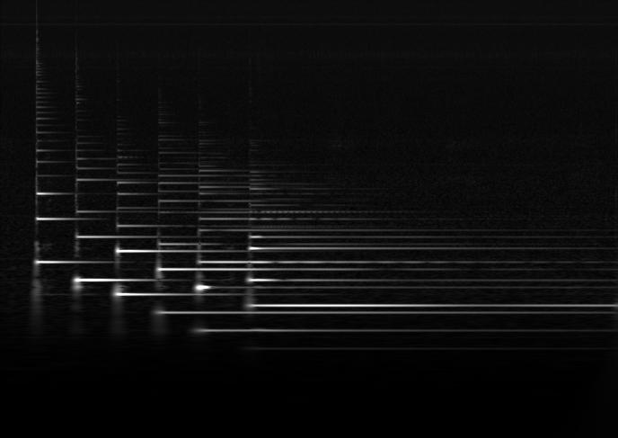

This example shows how to generate a greyscale constant-Q spectrogram image from an audio file using the Gaborator library.
We start off with some boilerplate #includes.
#include <memory.h> #include <iostream> #include <fstream> #include <sndfile.h>
The Gaborator is a header-only library — there are no C++ files
to compile, only header files to include.
The core spectrum analysis and resynthesis code is in
gaborator/gaborator.h, and the code for rendering
images from the spectrogram coefficients is in
gaborator/render.h.
#include <gaborator/gaborator.h> #include <gaborator/render.h>
The program takes the names of the input audio file and output spectrogram image file as command line arguments, so we check that they are present:
int main(int argc, char **argv) {
if (argc < 3) {
std::cerr << "usage: render input.wav output.pgm\n";
exit(1);
}
The audio file is read using the libsndfile library
and stored in a std::vector<float>.
Note that although libsndfile is used in this example,
the Gaborator library itself does not depend on or
use libsndfile.
SF_INFO sfinfo;
memset(&sfinfo, 0, sizeof(sfinfo));
SNDFILE *sf_in = sf_open(argv[1], SFM_READ, &sfinfo);
if (! sf_in) {
std::cerr << "could not open input audio file: "
<< sf_strerror(sf_in) << "\n";
exit(1);
}
double fs = sfinfo.samplerate;
sf_count_t n_frames = sfinfo.frames;
sf_count_t n_samples = sfinfo.frames * sfinfo.channels;
std::vector<float> audio(n_samples);
sf_count_t n_read = sf_readf_float(sf_in, audio.data(), n_frames);
if (n_read != n_frames) {
std::cerr << "read error\n";
exit(1);
}
sf_close(sf_in);
In case the audio file is a stereo or multi-channel one,
mix down the channels to mono, into a new std::vector<float>:
std::vector<float> mono(n_frames);
for (size_t i = 0; i < (size_t)n_frames; i++) {
float v = 0;
for (size_t c = 0; c < (size_t)sfinfo.channels; c++)
v += audio[i * sfinfo.channels + c];
mono[i] = v;
}
Next, we need to choose some parameters for the spectrum analysis: the frequency resolution, the frequency range, and optionally a reference frequency.
The frequency resolution is specified as a number of frequency bands per octave. A typical number for analyzing music signals is 48 bands per octave, or in other words, four bands per semitone in the 12-note equal tempered scale.
The frequency range is specified by giving a minimum frequency;
this is the lowest frequency that will be included in the spectrogram
display.
For audio signals, a typical minimum frequency is 20 Hz,
the lower limit of human hearing. In the Gaborator library,
all frequencies are given in units of the sample rate rather
than in Hz, so we need to divide the 20 Hz by the sample
rate of the input audio file: 20.0 / fs.
Unlike the minimum frequency, the maximum frequency is not given explicitly — instead, the analysis always produces coefficients for frequencies all the way up to half the sample rate (a.k.a. the Nyquist frequency). If you don't need the coefficients for the highest frequencies, you can simply ignore them.
If desired, one of the frequency bands can be exactly aligned with
a reference frequency. When analyzing music signals, this is
typically 440 Hz, the standard tuning of the note A4.
Like the minimum frequency, it is given in
units of the sample rate, so we pass 440.0 / fs.
The parameters are held in an object of type
gaborator::parameters:
gaborator::parameters params(48, 20.0 / fs, 440.0 / fs);
Next, we create an object of type gaborator::analyzer;
this is the workhorse that performs the actual spectrum analysis
(and/or resynthesis, but that's for a later example).
It is a template class, parametrized by the floating point type to
use for the calculations; this is typically float.
Constructing the gaborator::analyzer involves allocating and
precalculating all the filter coefficients and other auxiliary data needed
for the analysis and resynthesis, and this takes considerable time and memory,
so when analyzing multiple pieces of audio with the same
parameters, creating a single gaborator::analyzer
and reusing it is preferable to destroying and recreating it.
gaborator::analyzer<float> analyzer(params);
The result of the spectrum analysis will be a set of spectrogram
coefficients. To store them, we will use a gaborator::coefs
object. Like the analyzer, this is a template class parametrized
by the data type. Because the layout of the coefficients is determined by
the spectrum analyzer, it must be passed as an argument to the constructor:
gaborator::coefs<float> coefs(analyzer);
Now we are ready to do the actual spectrum analysis,
by calling the analyze method of the spectrum
analyzer object.
The first argument to analyze is a float pointer
pointing to the first element in the array of samples to analyze.
The second and third arguments are of type
int64_t and indicate the time range covered by the
array, in units of samples. Since we are passing the whole file at
once, the beginning of the range is sample number zero, and the end is
sample number mono.size(). The fourth argument is a
reference to the set of coefficients that the results of the spectrum
analysis will be stored in.
analyzer.analyze(mono.data(), 0, mono.size(), coefs);
Now there is a set of spectrogram coefficients in coefs.
To render them as an image, we will use the function
gaborator::render_p2scale().
Rendering involves two different coordinate spaces: the time-frequency coordinates of the spectrogram coefficients, and the x-y coordinates of the image. The two spaces are related by an origin and a scale factor, each with an x and y component.
The origin specifies the point in time-frequency space that corresponds to the pixel coordinates (0, 0). Here, we will use an origin where the x (time) component is zero (the beginning of the signal), and the y (frequency) component is the band number of the first (highest frequency) band:
int64_t x_origin = 0;
int64_t y_origin = analyzer.bandpass_bands_begin();
render_p2scale() supports scaling the spectrogram in
both the time (horizontal) and frequency (vertical) dimension, but only
by power-of-two scale factors. These scale factors are specified
relative to a reference scale of one vertical pixel per frequency band
and one horizontal pixel per signal sample.
Although a horizontal scale of one pixel per signal sample is a mathematically pleasing reference point, this reference scale is not used in practice because it would result in a spectrogram that is much too stretched out horizontally. A more typical scale factor might be 210 = 1024, yielding one pixel for every 1024 signal samples, which is about one pixel per 23 milliseconds of signal at a sample rate of 44.1 kHz.
int x_scale_exp = 10;
To ensure that the spectrogram will fit on the screen even in the case of a long audio file, let's auto-scale it down further until it is no more than 1000 pixels wide:
while ((n_frames >> x_scale_exp) > 1000)
x_scale_exp++;
In the vertical, the reference scale factor of one pixel per frequency band is reasonable, so we will use it as-is. In other words, the vertical scale factor will be 20.
int y_scale_exp = 0;
Next, we need to define the rectangular region of the image coordinate space to render. Since we are rendering the entire spectrogram rather than a tile, the top left corner of the rectangle will have an origin of (0, 0).
int64_t x0 = 0;
int64_t y0 = 0;
The coordinates of the bottom right corner are determined by the
length of the signal and the number of bands, respectively, taking the
scale factors into account.
The length of the signal in samples is n_frames,
and we get the number of bands as the difference of the end points of
the range of band numbers:
analyzer.bandpass_bands_end() - analyzer.bandpass_bands_begin().
The scale factor is taken into account by right shifting by the
scale exponent.
int64_t x1 = n_frames >> x_scale_exp;
int64_t y1 = (analyzer.bandpass_bands_end() - analyzer.bandpass_bands_begin()) >> y_scale_exp;
The right shift by y_scale_exp above doesn't actually
do anything because y_scale_exp is zero, but it would be
needed if, for example, you were to change y_scale_exp to
1 to get a spectrogram scaled to half the height. You could also make a
double-height spectrogram by setting y_scale_exp to -1,
but then you also need to change the
>> y_scale_exp to
<< -y_scale_exp since you can't shift by
a negative number.
We are now ready to render the spectrogram, producing
a vector of floating-point amplitude values, one per pixel.
Although this is stored as a 1-dimensional vector of floats, its
contents should be interpreted as a 2-dimensional rectangular array of
(y1 - y0) rows of (x1 - x0) columns
each, with the row indices increasing towards lower
frequencies and column indices increasing towards later
sampling times.
std::vector<float> amplitudes((x1 - x0) * (y1 - y0));
gaborator::render_p2scale(
analyzer,
coefs,
x_origin, y_origin,
x0, x1, x_scale_exp,
y0, y1, y_scale_exp,
amplitudes.data());
To keep the code simple and to avoid additional library
dependencies, the image is stored in
pgm (Portable GreyMap) format, which is simple
enough to be generated with just a few lines of inline code.
Each amplitude value in amplitudes is converted into an 8-bit
gamma corrected pixel value by calling gaborator::float2pixel_8bit().
To control the brightness of the resulting image, each
amplitude value is multiplied by a gain; this may have to be adjusted
depending on the type of signal and the amount of headroom in the
recording, but a gain of about 15 often works well for typical music
signals.
float gain = 15;
std::ofstream f;
f.open(argv[2], std::ios::out | std::ios::binary);
f << "P5\n" << (x1 - x0) << ' ' << (y1 - y0) << "\n255\n";
for (size_t i = 0; i < amplitudes.size(); i++)
f.put(gaborator::float2pixel_8bit(amplitudes[i] * gain));
f.close();
To make the example code a complete program,
we just need to finish main():
return 0;
}
If you are using macOS, Linux, NetBSD, or a similar system, you can build
the example by running the following command in the examples
subdirectory.
You need to have libsndfile is installed and supported by
pkg-config.
c++ -std=c++11 -I.. -O3 -ffast-math `pkg-config --cflags sndfile` render.cc `pkg-config --libs sndfile` -o render
The above build command uses the Gaborator's built-in FFT implementation,
which is simple and portable but rather slow. Performance can be
significantly improved by using a faster FFT library. On macOS, you
can use the FFT from Apple's vDSP library by defining
GABORATOR_USE_VDSP and linking with the Accelerate
framework:
c++ -std=c++11 -I.. -O3 -ffast-math -DGABORATOR_USE_VDSP `pkg-config --cflags sndfile` render.cc `pkg-config --libs sndfile` -framework Accelerate -o render
On Linux and NetBSD, you can use the PFFFT (Pretty Fast FFT) library. You can get the latest version from https://bitbucket.org/jpommier/pffft, or the exact version that was used for testing from gaborator.com:
wget http://download.gaborator.com/mirror/pffft/29e4f76ac53b.zip unzip 29e4f76ac53b.zip mv jpommier-pffft-29e4f76ac53b pffft
Then, compile it:
cc -c -O3 -ffast-math pffft/pffft.c -o pffft/pffft.o
(If you are building for ARM, you will need to add -mfpu=neon to
both the above compilation command and the ones below.)
PFFFT is single precision only, but it comes with a copy of FFTPACK which can be used for double-precision FFTs. Let's compile that, too:
cc -c -O3 -ffast-math -DFFTPACK_DOUBLE_PRECISION pffft/fftpack.c -o pffft/fftpack.o
Then build the example and link it with both PFFFT and FFTPACK:
c++ -std=c++11 -I.. -Ipffft -O3 -ffast-math -DGABORATOR_USE_PFFFT `pkg-config --cflags sndfile` render.cc pffft/pffft.o pffft/fftpack.o `pkg-config --libs sndfile` -o render
Running the following shell commands will download a short example
audio file (of picking each string on an acoustic guitar), generate
a spectrogram from it as a .pgm image, and then convert
the .pgm image into a JPEG image:
wget http://download.gaborator.com/audio/guitar.wav ./render guitar.wav guitar.pgm cjpeg <guitar.pgm >guitar.jpg
The JPEG file produced by the above will look like this:
